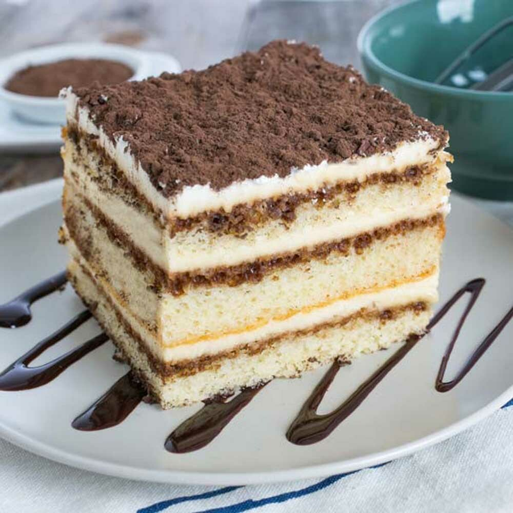

Tiramisu Recipe
Tiramisu is objectively the best desert in the world so I'm sharing the recipes below.
Ingredients
- Egg Yolks: Essential for a thick, rich, velvety smooth filling
- Sugar: I mean, come on, cake with no sugar?
- Milk: Helps make spreadable texture.
- Cream: Because why not?
- Vanilla: For that subtle flavor
- Coffee & Rum: Brought by the Wellerman, along with tea and sugar.
- Ladyfingers: Staple of the recipe
Recipe
- Make the Filling: Cook the egg yokls, sugar and milk until slightly thickened.
- Make the Whipped Cream: Beat the heavy cream like a lazy donkey.
- Soak the Ladyfingers: It puts the fingers in the coffee and rum.
- Assemble the Tiramisu: Like the Avengers, you know how it goes...
